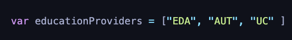
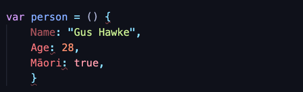
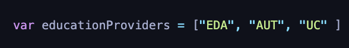
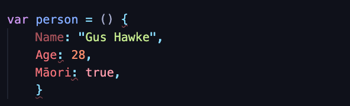

JS Fundamentals
The purpose of this post is to explain
HTML is all the words and content you see on a website. CSS is all the color and sizing that transform the 12pt black text into large, bold and colorful funky fonts. If we were to assign an animal to these two languages the below images would describe the difference between the two.
A loop is an instruction which is to be repeated over and over again until a certain criteria has been met. Just like my girlfriend asking me to pick up my wet towel off the floor. She won’t stop asking until the request has been executed… until the next time the towel ends up on the floor. The control flow would be wake up; shower; dry; get changed; hang towel up; leave for work. However the last task cannot be performed unless the previous task has yet to be performed.
The DOM is an acronym for Document Object Model, and the DOM is a data representation of the objects which form the content and structure on a webpage. Every webpage is a document comprised of HTML code, which can be displayed as either a webpage or the source code. The DOM allows the source code to be manipulated and is accessed by right-clicking on the webpage, and selecting the “inspect” dropdown option.
An example for when you would want to use the DOM is for when you are enabling JavaScript to your HTML & CSS code. This brings life into your webpage (unlike this one) and transforms your page from a static page to an interactive page. The DOM is not a language itself, however is the API (Application Programming Interface) tool which enables JavaScript to do its thing.
The DOM gives you infinite possibilities for your website. As a user interacts with the webpage, the DOM can auto-fill options in a form, based on what has already been selected or entered into the site without needing to refresh the page. This gives the user the feeling of working with a professional company / website that is personal based on what the user says.
Objects can be used to store a collection of data whereas an array can be used to store a list of values. A good use of an array would be when you are wanting to store a list of multiple items using a single variable. For instance ranking the top education providers in NZ.

These are assigned a number within the array and can be used to access, add or remove. EDA is assigned number 0, and would hold the top spot if this was in order of best education providers.
An object would be:

A function is a reusable portion of code. They are extremely useful for clearly clarifying parts of the program and increasing readability. They can save you a lot of time and take away the need for re-writing blocks of code. Instead you can call the same function as many times as necessary.
- 1. JavaScript and its relationship to HTML and CSS;
- 2. Control flow and loops, arrays and objects;
- 3. Functions and why they are useful;
- 4. The DOM and DevTools
An analogy to describe the differences between HTML and CSS
HTML is all the words and content you see on a website. CSS is all the color and sizing that transform the 12pt black text into large, bold and colorful funky fonts. If we were to assign an animal to these two languages the below images would describe the difference between the two.
Control flow and loops
A loop is an instruction which is to be repeated over and over again until a certain criteria has been met. Just like my girlfriend asking me to pick up my wet towel off the floor. She won’t stop asking until the request has been executed… until the next time the towel ends up on the floor. The control flow would be wake up; shower; dry; get changed; hang towel up; leave for work. However the last task cannot be performed unless the previous task has yet to be performed.
The DOM
The DOM is an acronym for Document Object Model, and the DOM is a data representation of the objects which form the content and structure on a webpage. Every webpage is a document comprised of HTML code, which can be displayed as either a webpage or the source code. The DOM allows the source code to be manipulated and is accessed by right-clicking on the webpage, and selecting the “inspect” dropdown option.
An example for when you would want to use the DOM is for when you are enabling JavaScript to your HTML & CSS code. This brings life into your webpage (unlike this one) and transforms your page from a static page to an interactive page. The DOM is not a language itself, however is the API (Application Programming Interface) tool which enables JavaScript to do its thing.
The DOM gives you infinite possibilities for your website. As a user interacts with the webpage, the DOM can auto-fill options in a form, based on what has already been selected or entered into the site without needing to refresh the page. This gives the user the feeling of working with a professional company / website that is personal based on what the user says.
Accessing data from arrays and objects
Objects can be used to store a collection of data whereas an array can be used to store a list of values. A good use of an array would be when you are wanting to store a list of multiple items using a single variable. For instance ranking the top education providers in NZ.

These are assigned a number within the array and can be used to access, add or remove. EDA is assigned number 0, and would hold the top spot if this was in order of best education providers.
An object would be:

what functions are and why they are useful?
A function is a reusable portion of code. They are extremely useful for clearly clarifying parts of the program and increasing readability. They can save you a lot of time and take away the need for re-writing blocks of code. Instead you can call the same function as many times as necessary.